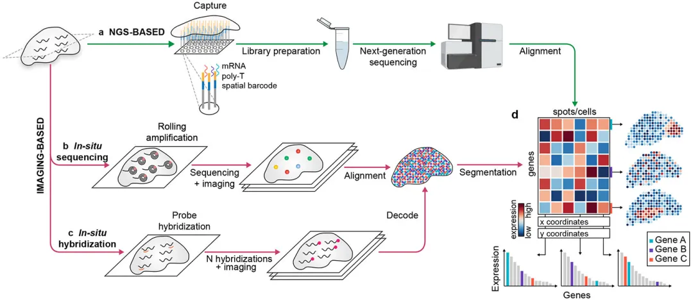
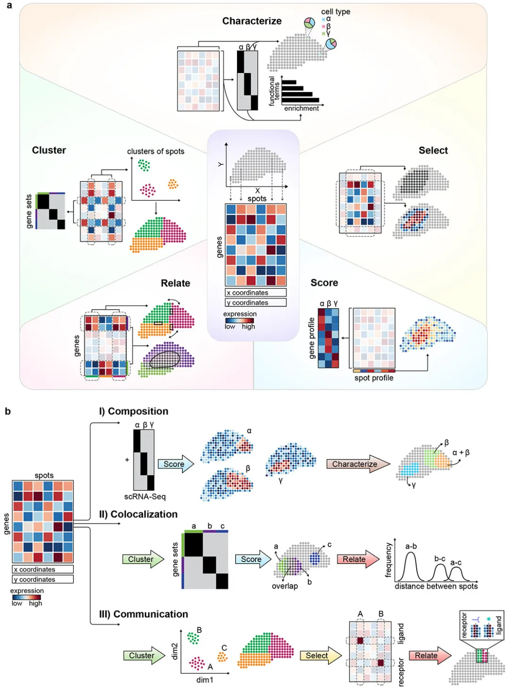
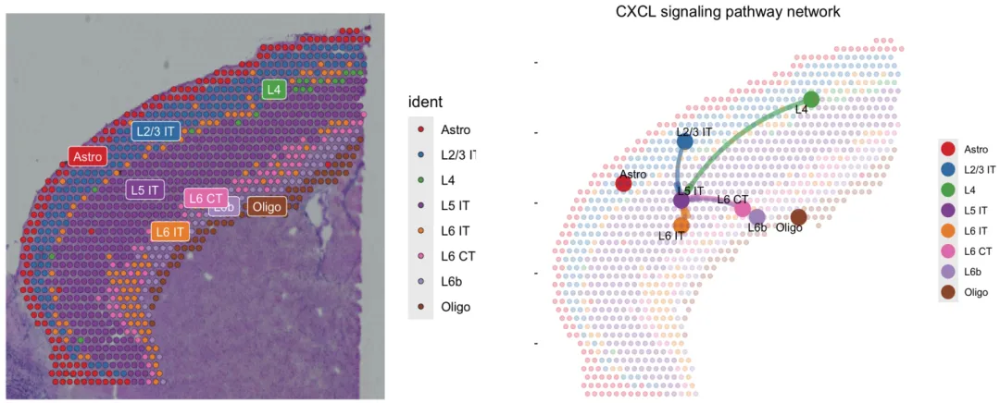
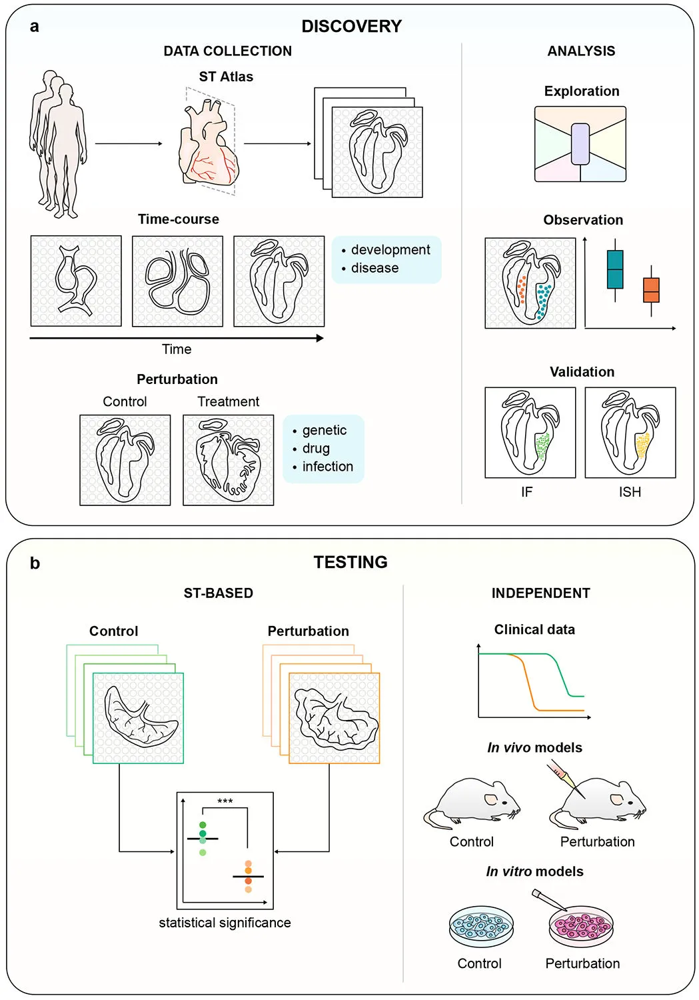

《Nature》空间转录组综述
原文：https://mp.weixin.qq.com/s?__biz=MzAwMzIzOTk5OQ==&mid=2247501296&idx=1&sn=cf4762197652fb023618bea6234f6343&chksm=9b3cbca0ac4b35b659392c508634c0efeb2ba5e203116de4854ece9bb32b648cc2648b2466cc#rd 合集：空间转录组 / 文献速递
一、写在前面
高通量测序此前一直有一个痛点：多细胞生物往往具有复杂的结构，细胞间的位置信息往往决定了它们的分化方向以及生物学功能；但高通量测序在建库提取核酸的过程中由于组织的破碎丢失 了这部分位置信息 ，这就导致了生物学问题研究的"失真"。这对于我们熟悉的单细胞测序来说最为可惜，明明精心的设计了barcode和测序方法，得到的却仍旧是抽象的数据。而空间转录组(spatial transcription)的出现为高通量测序加上了空间的坐标信息，这是一场新的革命，为神经科学、发育学、植物学、病理学等领域提供了强有力的研究手段。今天分享的这篇文章题为"Exploring tissue architecture using spatial transcriptomics"[1]，是2021 年发表于《Nature》的力作，于2022年、2023年发表在《Nature Review》的"The emerging landscape of spatial profiling technologies"[2]与"Methods and applications for single-cell and spatial multi-omics"[3]同样值得一看，适合需要了解空间转录组的同学入门。
二、空转出现的日子
其实空间思维 出现的很早，例如临床中做的各种病理切片，就能一定程度上的反应平面内的病理学信息。随着技术的发展，免疫荧光、原位杂交等技术出现能够对RNA、DNA、蛋白质在空间上的分布进行研究，但它们依然有一个明显的问题——通量过低。因此，如何结合近年来高速发展的高通量既技术与空间信息对RNA、DNA、蛋白质进行组学 水平的研究成了一个燃眉之急。早期有很多科研工作者做过类似的尝试。例如用一系列的切片来构建空间坐标、用显微解离法来提供空间信息(例如ProximID、PICseq、ClumpSeq)。
三、空间转录组策略
目前的空间转录组主要有两种种策略：(1)基于下一代测序(Next-Generation Sequencing, NGS)的策略 ，这一策略的核心思想是给不同位置来源的reads带上具有空间信息的短序列(空间barcode/ID)；(2)基于图像(Image)的策略 ，这一策略主要完成方式为原位扩增+原位测序 、原位杂交 。无论是那种策略，最终目的都是得到带有坐标信息的基因矩阵，再加上分组中设置的时间关系，甚至可以得到时空转录组 数据。

Figure 1
● 1、NGS策略
看过我们单细胞转录组课程的同学知道(手把手教你做单细胞测序数据分析（一）)单细胞建库时的思路为给每个细胞内的mRNA加上一个属于该细胞的barcode序列，这样在后期做定量时自然而然能根据barcode将每一条read归到所属细胞中。NGS策略的空转亦是如此，2016年时，Stahl等人就第一次报道了基于NGS策略的空间转录组，在玻片上预制了带有空间信息 的barcode 后，成功的捕获到了切片中组织的全转录组。那时每个芯片区域内仅包含上千个 直径为100μm 的spots，这已经是极大的突破，并成功的应用到了小鼠嗅球的测序中。再后来，我们熟知的10X Genomics在分辨率上带来了突破：Visium将spots的直径缩小到50μm 且每个spot能够捕获上万个转录本。当然，10X Visium也迅速被应用到神经科学、肿瘤生物学、发育生物学之中。还有一种基于NGS策略的Slide-Seq利用预置在上的磁珠 捕获mRNA，分辨率可以达到10μm ，每个磁珠可以捕获500个转录本，这意味着相同面积的玻片上能够捕获约等于10X Visium两倍的转录本。我们此前详细介绍的stereo-Seq**(空间转录组合辑)**利用玻片上预制的纳米球可以达到纳米级别的分辨率。Seq-Scope也可以达到亚细胞水平从而达到对核定位转录本与胞浆定位的转录本的可视化。
● 2、Image策略
在我们上面所述的原位扩增主要依赖预置探针原位捕获 转录本，利用接头进行原位逆转录后的环式扩增与测序实现(Figure 1B)，例如STARMap；其它通过合成(测序)的有BaristaSeq、Barseq。而通过杂交测序的代表为HybISS。虽然Image策略的通量一般较低(有时会收到光学因素限制)，但ExSeq作为原位测序的新势力也大大的提高了分辨率。
Image策略中的另一种类型——原位杂交，这相当于之前RNA原位杂交的升级版，主要通过预置能够发出荧光的互补探针实现(Figure 1C)。这种策略继承了原位杂交的劣势：通量低 。但分辨率占优 ，能够完成亚细胞 水平的转录本定位。代表的技术有SeqFISH与MERFISH。它们在生物学项目中的具体应用大家可以参考原文，此处不做赘述。
**四、**空间转录组的数据分析内容
这部分内容是我们最需要关注的，毕竟技术层面的内容测序公司一般是全包的，下游的数据分析往往决定了大家项目的完成度以及文章的水平。各位下游的实验设计与理论验证也离不开精妙的数据处理与分析。目前也有很多能够分析空转数据的工具包，例如Giotto、Seurat、STUtility、STLearn等。在测序质量方面，除了做定量时可以观察信噪比，对于不同spots捕获到的转录本数量也可以一定程度上反应测序质量与批次效应。而在许多空间转录组可以达到亚细胞分辨率的现在，如何将spots划分到不同的细胞中也成为了一种“幸福的烦恼”。如示意图中展示的那样(Figure 2A)，空转的分析内容也十分众多，接下来我们一个个的谈。

Figure 2● 1、cluster：聚类分群在单细胞中就是一个棘手的问题，我们也用过一些推送带大家排雷(细胞类型注释从入门到入土 & 为什么总把分辨率调的很高)。原来单细胞中利用相关性、欧氏距离等计算基因矩阵相似性的降维方法如PCA、tSNE、UMAP等依旧可以用来帮助spots聚类。还有一些更复杂的矩阵分析方法，例如共表达模块分析、非负矩阵分解、因子分析(如果有时间，我真的会更教程)等依然可以用于识别特定的基因或细胞cluster。但在空转数据里，聚类不仅要考虑到细胞/spots之间的表达相似程度，还需要考虑到spots在空间中是否相邻或连续 。
● 2、select
就像单细胞中可以提取亚群进行特定分析那样，空间转录组中可以选取特定的模块 进行分析，这对有着复杂结构的组织来说是个利好，例如恶性组织的边缘就是一个很值得关注的区域。当然，选择特定的基因观察其是否具有特定的空间分布(例如空间相关性)也是一种思路，利用BinSpect进行临近富集分析 、利用Haystack进行熵值计算、利用SpatialDE或SPARK进行高斯回归计算都是不错的尝试。
● 3、score
这一步主要是指对一些基因集生物学意义的探寻，这部分内容与单细胞转录组的分析重合度最高，此前的很多基因集评分方法都可以用，我们也做过一个很完整的总结：
一文搞定单细胞基因集评分● 4、characterize
对细胞类型的鉴别也一直是一个难题，也可是说是整个数据分析中最没有技术含量但却最重要的过程，除了单纯的看marker以外，multimodal intersection analysis、富集分析(如GSEA、KEGG、GO等)也是很好的方法。在空间转录组中又多了一项对spot所属细胞类型的鉴定，目前同样也有很多策略：基于非负因子(例如SPOTLight非负线性回归帮助推断spot所属类型)、基于可能性(例如Stereoscope、Cell2location、RSTG)、去卷积(例如spatialDWLS)。
● 5、其他分析
我们在单细胞中常用到的进阶分析如拟时序分析、RNA动力学分析、拷贝数变异分析、细胞通讯分析等也都可以用空间转录组数据中进行计算。cellchat甚至专门设计了针对空间转录组的细胞通讯分析：

此外，一些组织病理学方面的机器学习方法也可以与空间转录组联合分析，或是一些DNA seqFISH、RNA seqFISH等杂交技术亦可以与空间转录组相互佐证。目前，MIBI、CODEX、t-cyCIF等空间蛋白高通量检测技术与空间转录组也能形成很好的互补。
五、展望
空间转录组仍在发展中，为当下的生物学及医学体内外研究提供了许多种研究思路(Figure 3)，大胆的畅想一下，为了也许会有3D器官或组织的测序(虽然现在通过做多张空转切片也能够实现)。这些进步需要计算方法和仪器设备的共同进步。我们后续也会考虑像单细胞转录组那样给大家出一系列空间转录组的教学内容 。

Figure 3
参考文献
1、Rao A, Barkley D, França GS, Yanai I. Exploring tissue architecture using spatial transcriptomics. Nature. 2021 Aug;596(7871):211-220. 2、Moffitt JR, Lundberg E, Heyn H. The emerging landscape of spatial profiling technologies. Nat Rev Genet. 2022 Dec;23(12):741-759. doi: 10.1038/s41576-022-00515-3. Epub 2022 Jul 20. PMID: 35859028.3、Vandereyken K, Sifrim A, Thienpont B, Voet T. Methods and applications for single-cell and spatial multi-omics. Nat Rev Genet. 2023 Mar 2:1–22.

如何联系我们
 公众号后台消息更新不及时，超过48h便不允许回复读者消息，这里给大家留一下领取资料、免费服务器的微信号 ，方便各位随时交流、提建议(科研任务繁重，回复不及时请见谅)。此外呼声一直很高的交流群 也建好了，欢迎大家入群讨论：永久免费的千人生信、科研交流群
公众号后台消息更新不及时，超过48h便不允许回复读者消息，这里给大家留一下领取资料、免费服务器的微信号 ，方便各位随时交流、提建议(科研任务繁重，回复不及时请见谅)。此外呼声一直很高的交流群 也建好了，欢迎大家入群讨论：永久免费的千人生信、科研交流群
大家可以阅读完这几篇之后添加给生信入门初学者的小贴士 如何搜索公众号过往发布内容

 您点的每个赞和在看，我都认真当成了喜欢
您点的每个赞和在看，我都认真当成了喜欢